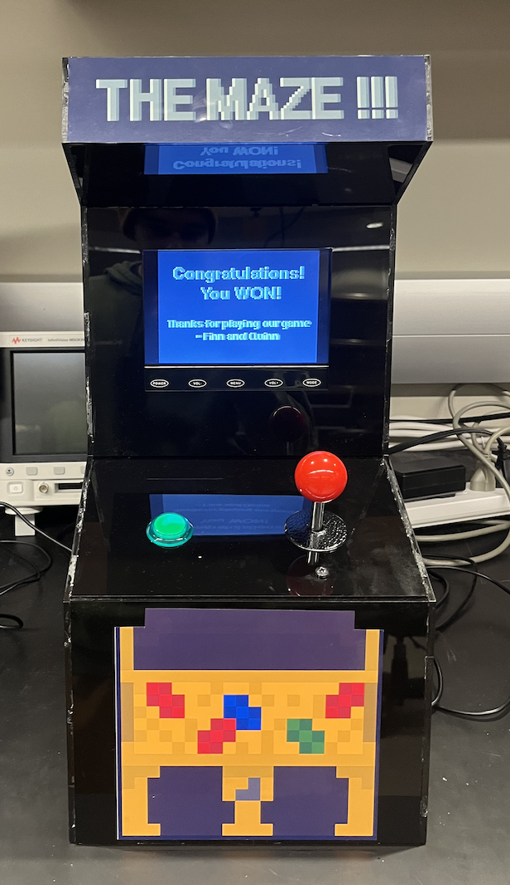
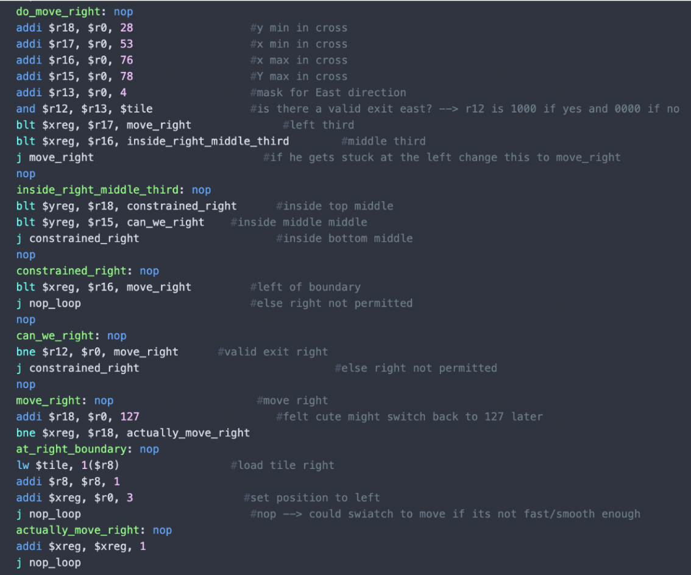
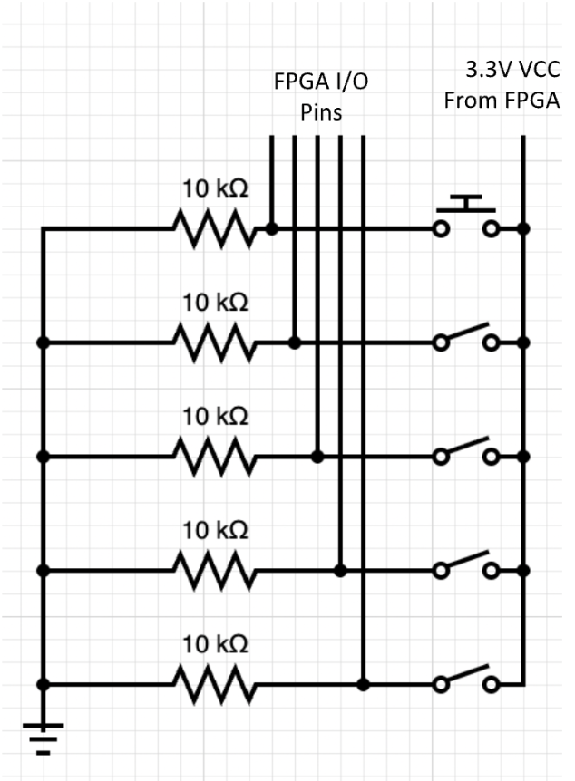
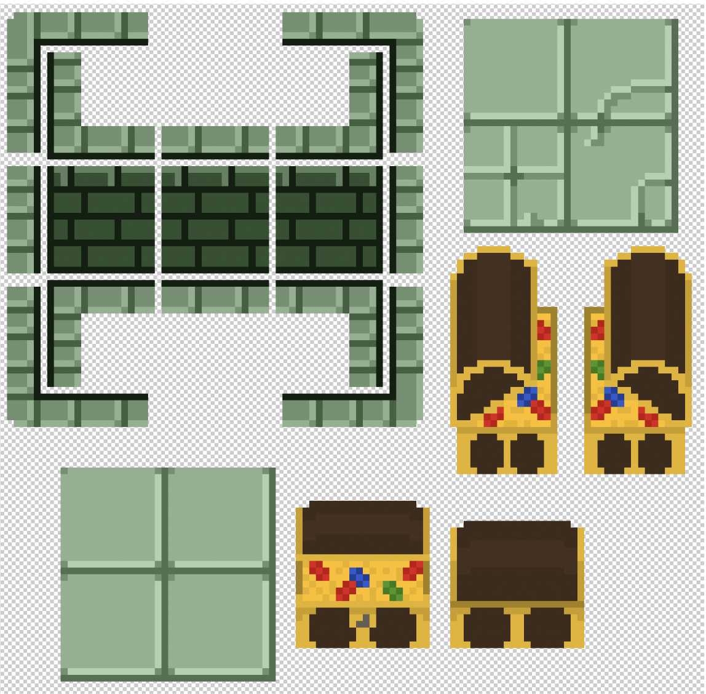
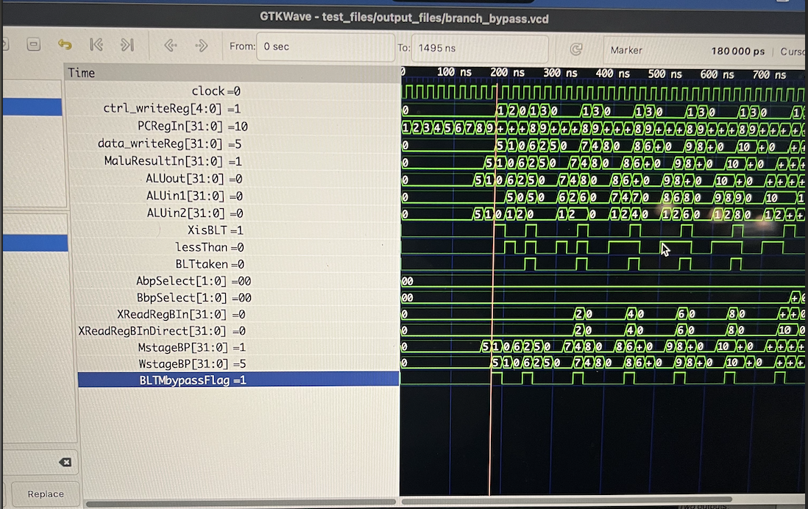
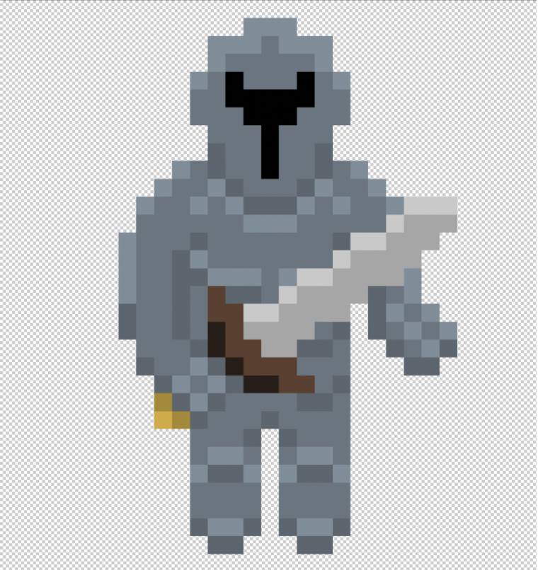

Digital Design · Computer Architecture
Procedural Maze Game on Custom Processor
A dungeon-crawler maze game designed with a partner running on a custom 32-bit pipelined processor implemented on an FPGA.

Abstract
This project involved designing and implementing a custom 32-bit pipelined processor on an FPGA to support an 8x8 tile maze game viewed one tile at a time that randomly generated new maze paths and supported a joystick for movement. At the start of the game, users see a sprite appear in the middle of a tile, and can navigate the sprite off the edges of each tile into neighboring tiles to follow along the maze path. At the end of the maze, a treasure chest appears in the middle of a dead end tile, and an end screen appears once users navigate the sprite over the chest. From this end screen, users can push a button to return to the start screen and can then replay the maze with a new map. While navigating the maze, the player's sprite is animated to match the direction the sprite is traveling and the sprite's movement is limited to the onscreen pathway.
Designed initially in Photoshop, each tile features a stone pathway against a dark green background. The widths and dimensions of each pathway are standardized and line up with the pathways of any other given tile. The tile data is encoded in a five bit message in a designated register detailing which directions-up, down, left, or right-have an exit and whether that tile is an end cell, or maze destination. If a tile is denoted as an “end cell,” a treasure chest appears in the middle of the cell.
After using a start button signal to latch a random seed (16-bit TFF counter) based on the timing of the user input, the first section of our code procedurally generates a random maze path and stores each tile's data in memory. This code ensures every tile within the 8x8 maze contains valid exit information and is connected to the rest of the maze, that the end of the maze is the furthest it can be from the start of the maze, and that the maze is perfect (contains no loops).
After the maze is generated, players spawn in the middle of the start tile, and can use the joystick to navigate the maze one tile at a time. Adaptive boundaries prevent users from exiting the maze path, allowing movement in each direction only when a valid exit exists in the corresponding direction.
This game is viewed on a VGA screen housed in an acrylic arcade cabinet which supports the button and joystick as user input. Inside the cabinet, an FPGA uploaded with our hardware design and memory is connected to a custom circuit of pull-down networks to interpret the input signals. On the outside of the cabinet, users see a polished black arcade cabinet with stickers and labels to improve aesthetic appeal.
Processor Features
5-Stage
Pipeline with hazard detection and bypassing for structural, data, and control hazards
Custom ISA
Supports all standard ALU operations and custom instructions such as modulus division
ALU
Includes carry-lookahead adder, modified booth multiplication, non-restoring division
25 MHz
Demonstrated clock speed
Results
The complete system consists of a custom CPU deployed to an FPGA connected to a VGA controller and pull-down input circuitry with game logic written in assembly. After pushing the start button but before the maze loads, a custom 8x8 maze is created and stored in RAM using a depth-first search backtrace algorithm paired with a pseudo random number generating XOR shifting function to find the longest path between the start and end tiles. Players use the joystick to navigate the maze by existing one tile into another tile where a valid exit/entry point exists. Custom map backgrounds are displayed to match the corresponding tiles for players to see where valid exits exist while contributing to the dungeon-crawler theme. When a player arrives at an end tile, there are no valid exists except for the entry point, and a tresure chest appears in the middle of the tile. By navigating the sprite over the treasure chest, players win the game and the VGA transitions to the next game state-the end screen-where players can choose to play the maze again with a different path by pushing the button on the arcade cabinet.

Technical Deep Dive
Assembly Program

Using MIPS-like assembly instructions, we program each game state and the respective conditions to progress between them, and a Python assembler is used to convert this to a binary memory file for our instruction memory. The maze generation takes place in the second game state, after the start screen. We used a DFS-backtrace algorithm paired with a PRNG xor-shifting function which carves the path through each tile at random. After a random start cell is selected, its index gets pushed to a stack, and the algorithm randomly chooses any unvisited neighbor to carve a path to. The path is carved by changing the respective directional bit in each tile's data address in RAM. This neighbor gets pushed to the stack, and the process continues until no neighbors are available to visit for a given tile. This tile then gets popped from the stack and the previous tile is checked for unvisited neighbors. The program repeats until it is empty, but keeps track of the highest stack position and that deepest cell's “end cell” bit is changed to a 1.
The next portion of the program is responsible for handling movement and boundaries. While the user is actively playing the game, game state 3, a loop is responsible for interpreting joystick input. Using mask values 1, 2, 4, and 8 the loop compares the joystick register to each mask with an AND gate to determine which direction the joystick is being pointed. This loop includes a “nop” loop that can be adjusted to change the frequency at which joystick conditions are checked. Because the joystick register stores joystick input data in the bottom four bits in order, the 1 mask reveals if the up direction is pressed, the 2 mask reveals if the right direction is pressed, the 4 mask reveals if the down direction is pressed, and the 8 mask reveals if the left direction is pressed. If none of these AND gates retain a valid movement signal in any direction, the loop is repeated until a signal is detected. If a direction is pressed, the MIPs jumps to the corresponding direction. Here, the internal x and y boundaries for each direction are calculated to determine if movement in that direction is permitted. At this step, another AND gate uses another decimal mask to check the corresponding value of the tile register which encodes whether or not there is a valid exit in the intended direction, and stores this value in register 12. If an exit upwards is valid and the sprite is in the middle of the tile, the assembly jumps to unconstrained upwards movement. If there is not a valid exit in the up direction, the assembly jumps to the same constrained movement applied to the other two vertical thirds. This logic is mimicked for the other three directions, with right and left delineating the screen into first vertical thirds and second horizontal, opposite that of up and down handling.
Immediately before updating the position register after a valid movement has been permitted in any given direction, the assembly code checks if the sprite is at the border of the screen. If the sprite is at the tile border, instead of updating the position register by 1 the code loads the corresponding tile address from memory for the given border, and updates the sprite's position to opposite the edge it just encountered. For example, if a user moved upwards and encountered the top boundary the program would load the tile data for the tile above the one the user is currently in, and then set the sprite's y-direction position to the bottom of the screen. This process is mirrored in all four directions, allowing users to move from tile to tile by reaching the border of the tile they are presently in.
The joystick loop also actively checks whether or not the tile being displayed is an “end” tile, or that the user has completed the maze. If a tile is an end tile, a treasure chest appears in the center of the screen. The joystick input loop uses a mask value of 16 to isolate the fifth bit of the tile register, where end tile data is encoded, and if this bit is valid checks the sprite's position. If the sprite is the center of an end tile, it means the user has moved to the chest and won the game. When this is detected, the game state is updated to 4, displaying a screen stating “you win” and offering the user the option to play again by pushing the start button.
Key Features
- DFS-backtrace algorithm
- Register-mapped I/O
- NOP loop for sprite pacing
- Continuous boundary checking
Inputs and Outputs

Inputs: Players progress game state with a button, and move the sprite with a joystick. Both of these input devices are connected to the FPGA through a pull-down network to ensure active-low behavior. The button and limit switches inside the joystick are each connected within their individual branches in series between a 10 kΩ resistor and a constant 3.3V supplied by the FPGA. On the low side of each of these switches, the corresponding FPGA input/output pin connects each switch to the FPGA as shown in figure 3. When a switch is toggled, a current through the corresponding branch is created sending a logical high signal to the FPGA. Our hardware uses register-mapped I/O: register 20 stores the button's state in its least significant bit, while register 27 stores the data for each direction in the four least significant bits as up, right, down, and left respectively. These registers are then handled in assembly to produce the desired output.
Outputs: The only output for this project was a VGA display. The project's wrapper module connects our VGA controller to important register outputs, making our project register mapped I/O. A few examples of these registers are the joystick signals, the X and Y coordinates of our sprite, and the current game state. Each of these plays a role in what is displayed on the VGA. A tree of hardware logic determines which background should be displayed (based on game state and current tile data) and where the sprite is positioned and the direction it faces (based on joystick and coordinate data). The project wrapper's I/O header contains the clock and reset inputs for the hardware as a whole, the button and 4-bit joystick input which connect directly to register next-states, and the necessary signals for our VGA display as outputs. These include the vertical and horizontal edge sync signals, and a 4-bit color signal for each RGB channel.
Key Features
- Pull-down input circuitry
- Central FPGA power source
- Register mapping through I/O header
Art and Visuals

The background and sprite were created in Photoshop as pixel art. The background art is made up of a set of tiles that represent the floor, walls, and trim. They could be placed to configure openings in each direction. There are 16 generic cell backgrounds, with an additional 4 end cell backgrounds and 3 message displays to direct the player. The sprite was designed with the 4 movement directions in mind. There are 4 art variations that indicate which direction the player is moving, giving the game a more dynamic feel.
Key Features
- Made in Photoshop
- Boundaries align between tiles
- Different sprite orientations for each direction
Photo Gallery


Challenges & Debugging
While we encountered several setbacks throughout the development process, we encountered the most significant challenge of the project when trying to implement boundaries within each maze tile. While the background art allows individual tiles to line up with any given neighboring tile to create a maze, the tile transition code does not enforce the sprite to follow this path. Without boundaries, users could travel from one tile to any given neighboring tile regardless of the maze data present. To implement boundaries, we started by adding boundaries for each corner. Because every tile lines up, and every tile is a combination of corners, the sprite would never need to enter the corner sections of any tile. After attempting to add boundaries through the method described in the assembly section, we realized the boundaries only worked completely in the up and left directions, and in particular circumstances in the right and down directions. Believing this could be related to the tile data, we decided to move forward with adaptive boundaries for each tile direction. Again, these adaptive boundaries worked immediately for the up and left directions and not at all for the right and down directions. Each direction used the same algorithm and structure to verify the sprite's location and check for boundaries, albeit with different boundary values, so we did not initially think this was a MIPs issue. After troubleshooting our joystick circuit with a multimeter, we realized the issue had to be software related. The only difference we noticed between the up and left direction handling and the right and down direction handling was the structure of branch instructions that checked for a boundary. In the up and left directions, if the sprite is in a portion of the screen with a constrained movement in that given direction, a branch-if-less-than instruction compares the boundary, loaded into register 18, against the corresponding position register for that direction. If the position register is greater than the boundary in these cases, the sprite is permitted to move. If the position register is less than or equal to register 18 in these cases, then the sprite has reached a boundary and movement is not permitted. When extrapolated to the down and right directions, this logic was flipped to account for the x and y directions counting up across the screen from the top left corner. So, in the down and right directions a branch to movement is taken if the position register value is less than the boundary value, loaded to register 18. While a simple logical flip, this code did not work as intended and with this iteration of MIPs the down and right boundaries did not work at all. While we tried numerous strategies to debug this, including rewriting the movement code in a more organized format, the only change that yielded any results was switching the order of the blt instruction. With this switch, a branch was taken to movement only if the boundary value in register 18 was less than the position register, which we thought would isolate the sprite to the bottom and right sections of the screen. Instead, this implemented the boundary behavior we were looking for, but in the wrong locations. With these boundaries, the sprite was able to follow the maze but was confined to the left and top portions of every pathway. Believing this looked less professional and was less enjoyable for the user, we ultimately decided to revert our movement code to exclude down and right boundaries for the final presentation.
Future Improvements
- Complete movement boundaries
- Increased maze size
- Character selection
- Lights and other cabinet aesthetics